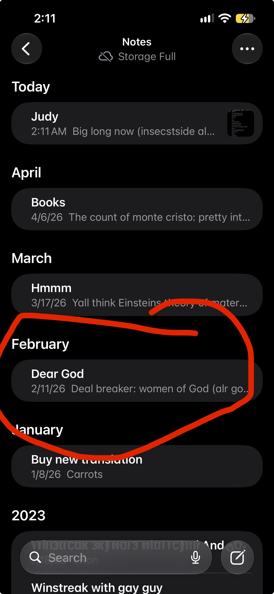
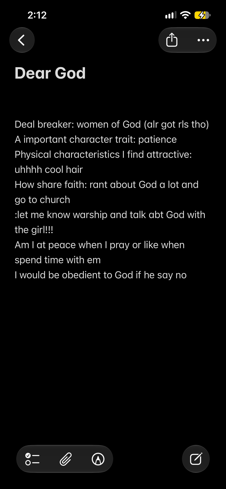

Writing to Judy. Hey Judy, if you are seeing this then you are officially 16!! Happy birthday, my pretty girl. If you aren’t seeing this one of has died and I hope not that’d be scary😭. Buttttttt as appreciation I wanted to wish you a happy birthday and wanted to tell you I love you sosososo much. From the moment we became friends I knew I had taken interest in you yet not romantically, but I did want to become best friends with you. Obviously mental health issues came, and I had ghosted everyone but then eventually I had found the courage to Dm you again. As even through the time of isolation I went through, you had been on my mind. But to help sum things up we started talking again and I slowly but surely, I started to see you differently I mean it was actually crazy. My heart started racing when we talked and had our little moments, I would wait on our texts, I couldn’t get my eyes off my screen, and I was very nervous around you. I had liked you and it was very scary but yet you comforted me in a way no one else has and I truly think Ur so cool and amazing for that. Then we started like secretly flirting and calling each other “fake boyfriend” or “fake girlfriend” I found that so cute and funny at the time knowing I had actually liked you😭😭. But then obviously things changed when you had given me a certain gift in Canva, that we all know and love. Judy, that gift really made me happy, and I had cried reading it over and over again, and I still read it. But that’s where now I can help you understand why I’m currently writing this. In the gift you had told me that you possibly wanted to be more than friends and I had told you to give me time. So, I’m going to do what’s well overdue and ask for your hand in a real relationship. Judy, I love you sosososo much and ever since I have laid my eyes upon Ur beautiful laugh, personality, face, and body I have not felt a single ounce of attraction to anyone else physically or emotionally. Your smile is so beautiful and it brights up my day seeing you smile or hearing it. I’m pretty sure that’s why it’s so hot in Egypt as Ur smile is brighter than the sun. I also have such a deep desire to one day feel Ur hair I think it’s so pretty, and it makes me wanna just give you so many pets while Ur resting on my chest or lap! Ur truly so beautiful and I have never felt such an attraction to anyone ever. Now regarding Ur eyes I want to say that holy carp I have never understood what people meant by “you can see someone through their eyes” but the more and more I stare into Ur eyes that are as pretty as the entire galaxy I can tell it represents you just as well, and I can’t wait for a future where I can see them close and when you cry I can lick Ur tears and eyes. 😭 I also want to mention Ur lips. I really love them so much holy carp. Every time I see them, I want to kiss you even more than I already do. I hope you know I can’t wait for the day, so I fill Ur face and especially Ur lips with much of my love and kisses. Now for the final thing physically I thought I should mention, before I get into my emotional attraction with you is just Ur body in general. As I am writing this is exactly 3 days before Ur birthday and omgosh bro Ur body is so beautiful and perfect when I had seen those photos of you in that costume, that was the first time I had got a semi good look at Ur body my face got so red and my smile was so huge that my face started hurting. I really couldn’t imagine looking or wanting something so badly, but when I had seen you in that and seen everything I wished I could literally jump through the screen and show you all the love I have. I’m someone who rarely has those types of desires, but the way you had looked it felt so easy to feel what I had did in that moment. Not to seem like I only care about your body, but only the Lord knows how truly I love Ur body and how much I can’t wait to have you in person. As much as I love you physically, my love for you emotionally is so much more deeper. Judy before I had even known what you looked like I had fallen in love with you and there’s so many reasons for that so let’s get into that. Judy, you are the sweetest soul I have ever met. Ever since I had met you and till now you always have been so kind to everyone around you and especially me. I can never imagine you being another way, I remember in the earlier stages of talking you told me how some people had called you mean in the past, and till this day I have never once seen how they could think such a thing. I remember all the times you comfort my over thinking or my nights where I’m doing terrible, and I can never get over how sweet you’ve been to me and others my love. Now onto how funny I find you. One of the qualities I have always prayed for in someone is someone who is very funny and man you ARE VERY FUNNY. There is not one call or conversation we have had that I am not laughing my bottom off. I will always remember when you said “I remember holding my collar” I started dying after realizing what you said. Or in the mornings when you said “I wanna bomb Iran” 😭 I think no matter what you’ll always make me laugh. One last emotional attribute I like about you just to make it equal, as I wrote 3 physical attractions. I think maybe idk I wrote a lot, in general everything about you. But Judy, I really do love how you are in general honestly, I think you are the nicest soul always concerned about everyone, even with the littlest things. Like with me when I say never mind and you always care and ask me what I was going to say. Or when you are asking about how my day is, I really think you are so nice and kind. I love it about you. Another thing is how loving you are with me. I never once felt such a way about a person or have put so much effort into a person till now as I’m obviously making an entire website dedicated to you. Not once in this entire relationship have, I ever felt unloved and I love how gentle you treat me almost like I’m glass that’ll break any moment. You’re also just so loving like with the pet names and saying random “I love you’s” and just always making me feel loved. You are everything I ever wanted and to show you that I want to show you something I made whilst I had just started my faith back in February of 2026. It’s basically a list that my church made me do, on what exactly would I want in a Godly woman and it’s literally all that you are. Here’s the image and the date to prove it

